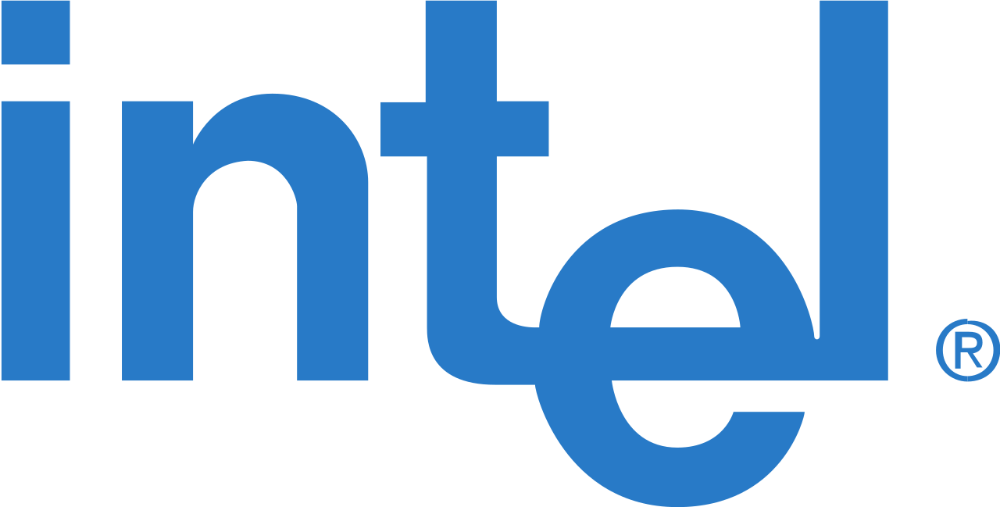
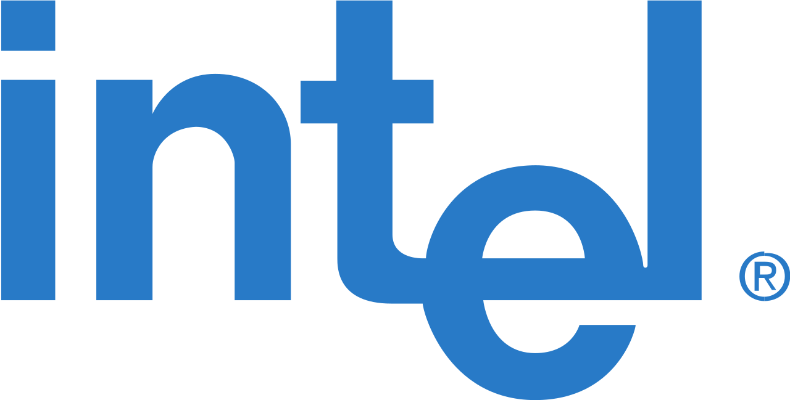

Intel Corp.
 

Интел — производитель электронных устройств и компьютерных компонентов, включая микропроцессоры, наборы системной логики (чипсеты). Штаб-квартира расположена в Санта-Кларе, штат Калифорния, США.
История
Роберт Нойс и Гордон Мур были в числе 8 соучредителей Fairchild Semiconductor, основанной в 1957 году. В этой компании они разработали интегральную схему и решили основать собственную компанию. 18 июля 1968 года она была зарегистрирована под названием NM Electronics, но вскоре переименована в Intel (сокращение от Integrated Electronics, «интегральная электроника»). Вскоре к ним присоединился Энди Гроув, ещё один сотрудник Fairchild, разработавший и внедривший метод корпоративного управления OKR, эффективно используемый в менеджменте. Бизнес-план компании, распечатанный Робертом Нойсом на печатной машинке, занимал одну страницу. Представив его венчурному финансисту Артуру Року, ранее помогавшему создать Fairchild, Intel получила стартовый кредит в 2,5 млн $.
Свои усилия компания направила на разработку полупроводниковой памяти, первым продуктом стала микросхема 3101 Schottky bipolar memory, высокоскоростная память с произвольным доступом на транзисторах Шоттки, в 1969 году была представлена микросхема 1101 на основе металл-оксидного полупроводника. В 1970 году компания начала выпуск чипа 1103, динамической памяти объёмом 1 килобайт, первой реальной альтернативы распространённой в то время памяти на магнитных сердечниках.
НВ 1971 году Intel получила заказ на двенадцать специализированных микросхем для калькуляторов от японской компанией Busicom, но по предложению инженера Теда Хоффа было решено собрать все элементы в один чип; так компания разработала первый в мире коммерчески успешный микропроцессор Intel 4004. Он включал 2300 транзисторов и не уступал по производительности ЭВМ ЭНИАК с 38 тысячами электронных ламп. Вскоре был разработан Intel 8008; он был 8-разрядный, поэтому мог обрабатывать не только цифры, но и буквы и другие символы. В 1974 году был представлен первый по-настоящему универсальный микропроцессор Intel 8080; при цене 360 $ он мог заменить ЭВМ, стоившие несколько тысяч долларов. В 1971 году акции Intel были размещены на Нью-Йоркской фондовой бирже. Также в этом году компанией были разработаны программируемые микросхемы (erasable programmable read-only memory, EPROM).
В конце 1970-х годов компания начала терять позиции на рынке микросхем памяти, с 82,9 % в 1974 году до 1,3 % в 1984 году, что, однако, компенсировалось закреплением лидирующих позиций на рынке процессоров. В 1978 году был представлен 16-разрядный процессор Intel 8086, но его продажи сначала уступали конкурирующему процессору Motorola 68000. Ситуация изменилась, когда в 1980 году IBM избрала процессоры Intel 8088 для своего первого персонального компьютера. В декабре 1982 года IBM за 250 млн $ купила 12-процентную долю Intel, таким образом закрепив партнёрство; эта доля была продана в 1987 году, значительно более прочным оказалось другое партнёрство, с Microsoft Corporation, прозванное Wintel (от Windows и Intel). В 1983 году оборот компании впервые достиг миллиарда долларов, к этому времени число сотрудников превысило 15 тысяч (с 12 в 1968 году). В 1985 году началось продвижение на рынок процессора 80386, который позволял обрабатывать несколько программ одновременно, имел 32-битную архитектуру и вмещал 275 тысяч транзисторов. Следующая модель, 80486, представленная в 1989 году, вмещала 1,2 млн транзисторов и имела встроенный математический сопроцессор. Вторая половина 1980-х годов была отмечена затяжным судебным разбирательством между Intel и NEC Corporation: Intel утверждала, что NEC нарушила авторские права на микрокод чипов 8086 и 8088 при производстве своих микросхем; суд отклонил иск, но в ходе разбирательства стала достоянием общественности агрессивная маркетинговая стратегия Intel по вытеснению конкурентов.
В начале 1990-х годов началась рекламная кампания Intel Inside (наклейка с такой надписью появилась на всех персональных компьютерах с процессором Intel), кроме этого компания начала расширять сферу деятельности в сетевое и телекоммуникационное оборудование, начала выпускать материнские платы, благодаря чему чистая прибыль в 1992 году превысила миллиард долларов. В 1993 году был представлен процессор пятого поколения Pentium с 3,1 млн транзисторов и быстродействием более 100 млн операций в секунду (в 1500 раз быстрее Intel 4004). Вскоре после его презентации был выявлен дефект, отзыв обошёлся компании 450 млн $, но, несмотря на это, в этом году выручка компании составила 8,78 млрд $, а чистая прибыль — 2,3 млрд $. С началом продаж в 1995 году процессора Pentium Pro оборот в 1996 году превысил 20 млрд $, компания вышла на первое место в мире по производству материнских плат (10 млн или 40 % рынка), которое сохраняла до начала 2000-х годов. В 1999 году Intel была включена в Промышленный индекс Доу — Джонса. В 2000 году на рынок были выпущены процессоры Pentium III с частотой 1 ГГц и Itanium, первый 64-разрядный процессор компании[5]. К этому времени во всех компьютерах, за исключением Apple, были процессоры Intel или совместимые с ними процессоры производства AMD. Apple с 1984 года использовала процессоры Motorola, но в 2005 году объявила о переходе на Intel.
В 2010 году за 7,68 млрд $ была куплена компания в сфере компьютерной безопасности McAfee, на её основе было создано подразделение Intel Security Group. Акционеры сочли сумму недостаточной и подали иск против Intel и бывшего руководства McAfee. В 2017 году подразделение было выделено в самостоятельную компанию, которой было возвращено название McAfee[2][7]. В 2015 году за 16,7 млрд $ была куплена компания Altera[8]. В августе 2017 года была куплена израильская компания Mobileye, занимающаяся разработками в области машинного зрения и самоуправляемых автомобилей; стоимость сделки составила 14,9 млрд $[2][9]. В 2018 году проблемы с задержкой внедрения 10-нанометрового техпроцесса и обострение конкуренции на рынке микропроцессоров вынудили корпорацию взяться за реорганизацию производственного подразделения: это подразделение разделили на три департамента — технологических разработок, поставок и управления производством, а один из его ключевых руководителей Сохейл Ахмед (Sohail Ahmed) был отправлен в отставку. В июне 2019 года компания запретила сотрудникам общаться с коллегами из Huawei. В июле 2019 года было достигнуто соглашение о продаже активов, связанных с разработкой и производством модемов для смартфонов компании Apple. Сумма сделки составила 1 млрд $, что стало вторым крупнейшим приобретением в истории Apple; активы включают производственные мощности с 2200 сотрудников и ряд важных патентов. Длительное время микросхемы модемов для своих iPhone Apple покупала у Qualcomm, но в 2018 году из-за разногласий в отношении лицензирования патентов перешла на модемы Intel[13].